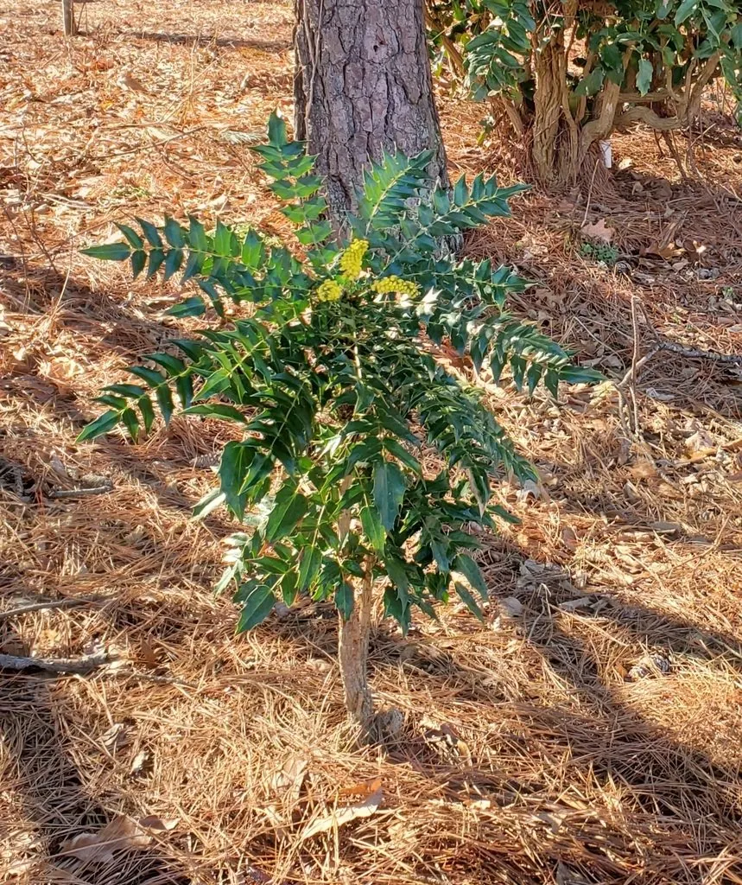

灌木与花木 · 植物界
阔叶十大功劳 Mahonia bealei

小檗科常绿灌木，叶片宽大、边缘具刺，深秋开黄花，冬季结蓝紫果，叶形优美，是观叶观果兼药用的植物。
- 分类
- 门被子植物门纲木兰纲目毛茛目科小檗科属十大功劳属
- 栖息环境
- 海拔 1000–2000 米的山坡林下、灌丛与沟谷，喜温暖湿润、耐阴
- 地理分布
- 中国陕西、甘肃、河南、安徽、浙江、江西、福建、湖北、湖南、四川等地
- 保护级别
- 暂无评估；中国未列入国家重点保护野生植物名录
物种志
阔叶十大功劳为小檗科十大功劳属常绿灌木，高 1–4 米，茎粗壮，树皮灰褐色。奇数羽状复叶，小叶 7–15 枚，卵形至宽卵形，较十大功劳更宽大，革质，边缘具粗刺齿。花黄色，组成顶生的总状花序，花期 9–11 月；浆果卵形，成熟时蓝紫色、被白粉，果期翌年 3–5 月。
阔叶十大功劳原产中国陕西、甘肃、河南、安徽、浙江、江西、福建、湖北、湖南、四川等地，生于海拔 1000–2000 米的山坡林下与灌丛。它喜光，也耐阴，喜温暖湿润，适宜深厚肥沃、排水良好的土壤。根、茎、叶含小檗碱，可入药，有清热解毒之效。叶形宽大、叶色浓绿，深秋黄花成串，冬季蓝果累累，是庭院与林下绿化的优良材料。
形态与习性
- 株高1–4 m，茎粗壮
- 花期9–11 月，黄色总状花序
- 果期翌年 3–5 月，浆果蓝紫色
- 光照喜光，也耐阴
- 水分喜湿润，忌积水
- 土壤深厚肥沃、排水良好的壤土
- 主要用途根茎叶入药，庭院与林下观赏
趣味知识
- 阔叶十大功劳的小叶比十大功劳更宽大，边缘的刺齿也更粗壮。
- 它在深秋至初冬开花，是少见的冬季观花灌木。
- 果实蓝紫色、被白粉，翌年春季成熟，可吸引鸟类取食。
- 根与茎含小檗碱，民间曾用作清热药。